專案成就
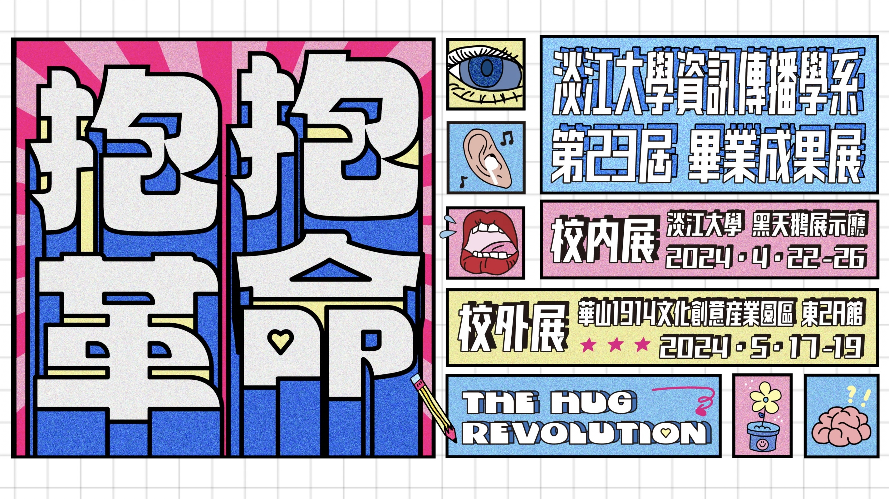
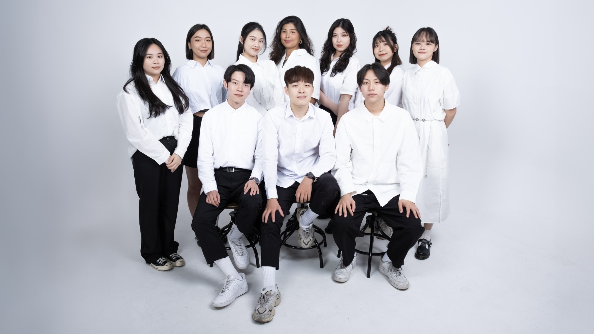
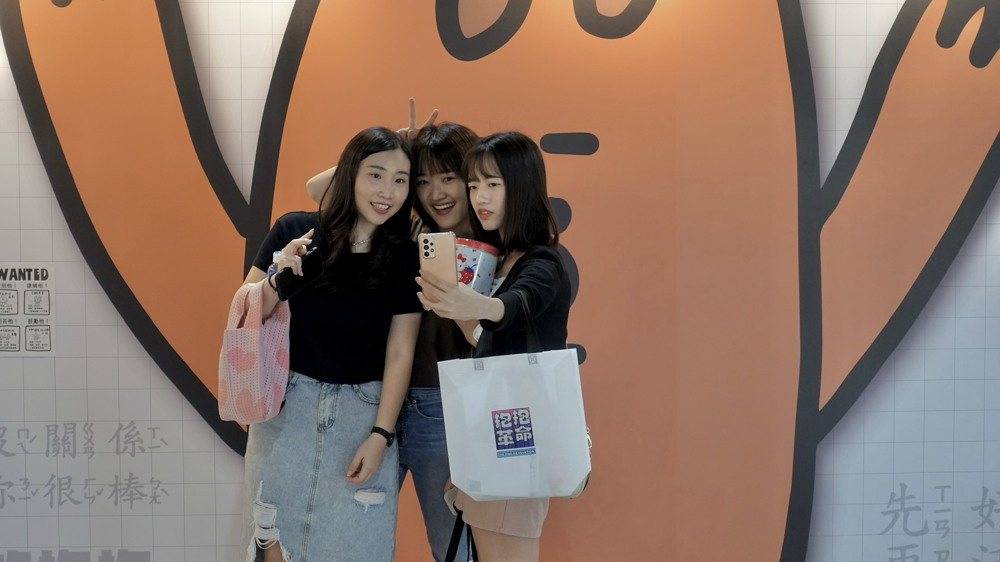
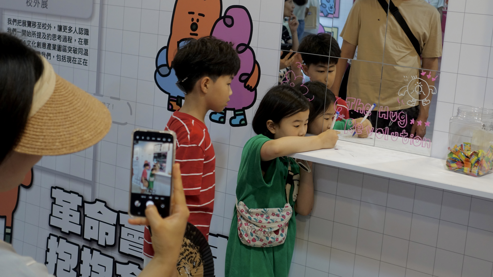
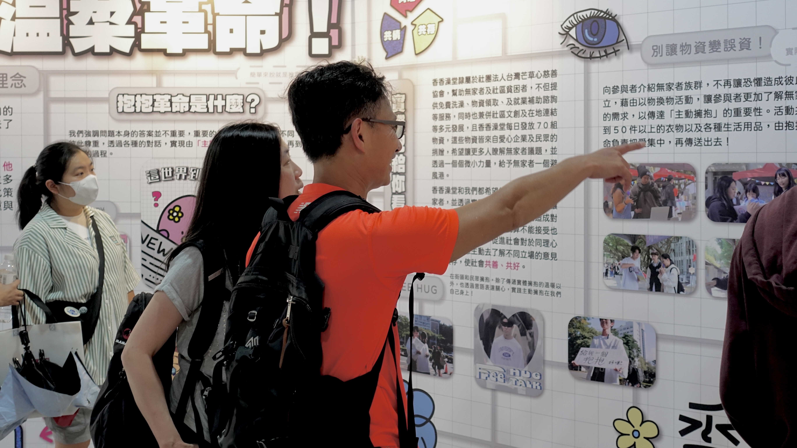

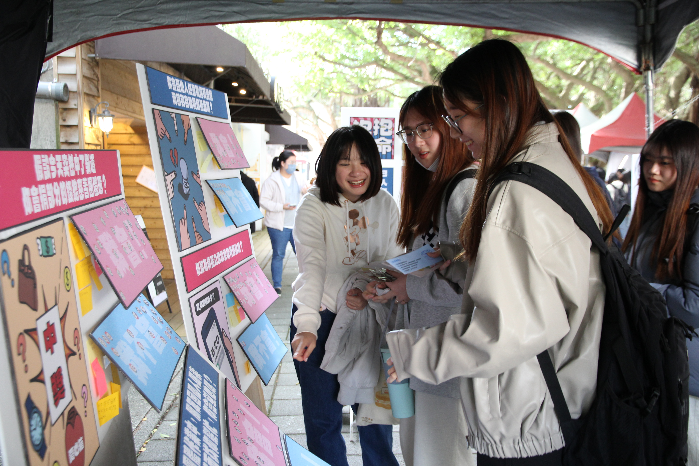
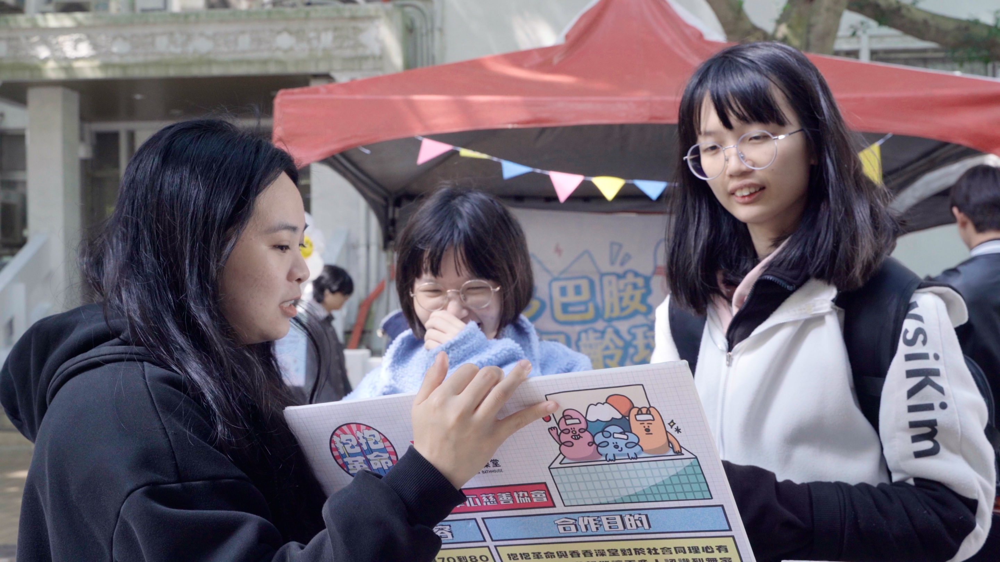


抱抱革命 Hug Revolution
擔任影像總監，負責統籌20+支影片全流程製作，舉辦3場快閃活動與2場大型展覽，整合跨組別碎片化資訊與多元素材，完成具敘事結構之展覽開幕影片，並於華山文創園區成功展出，確保整體內容品質與現場呈現效果一致。
參觀線上展覽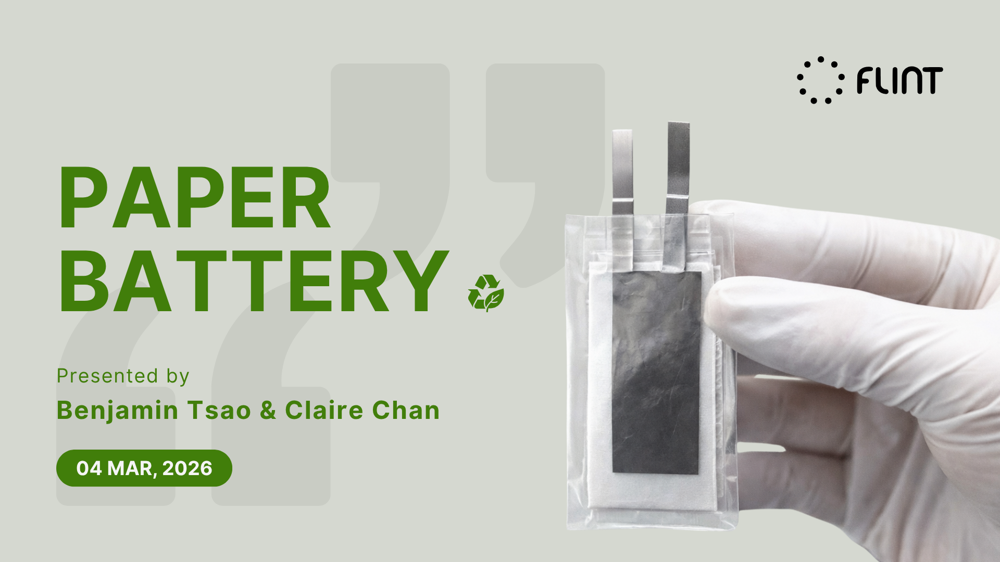

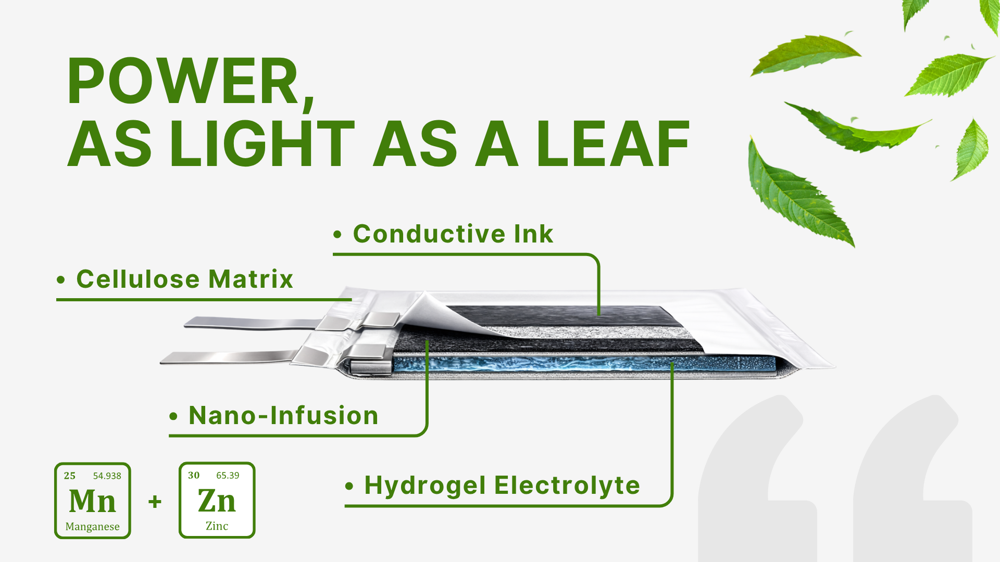
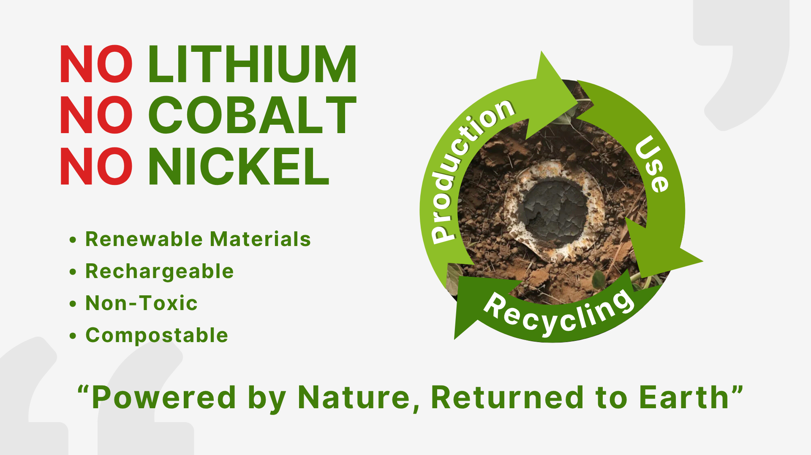
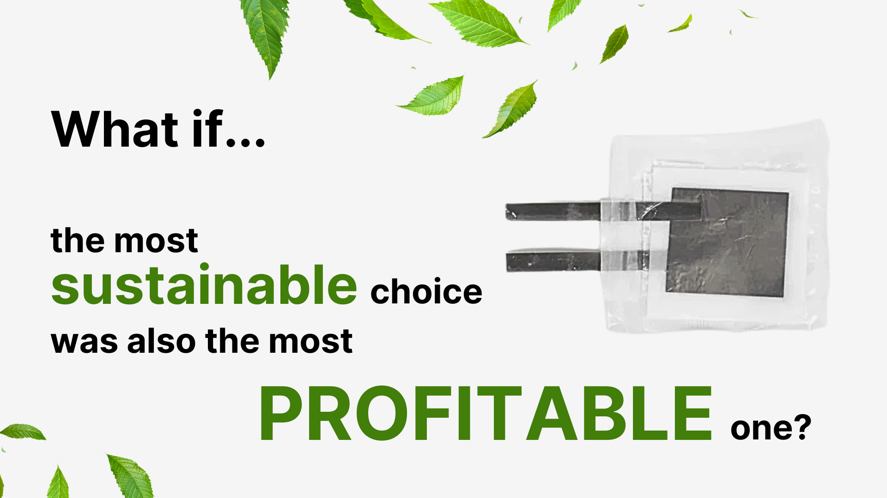
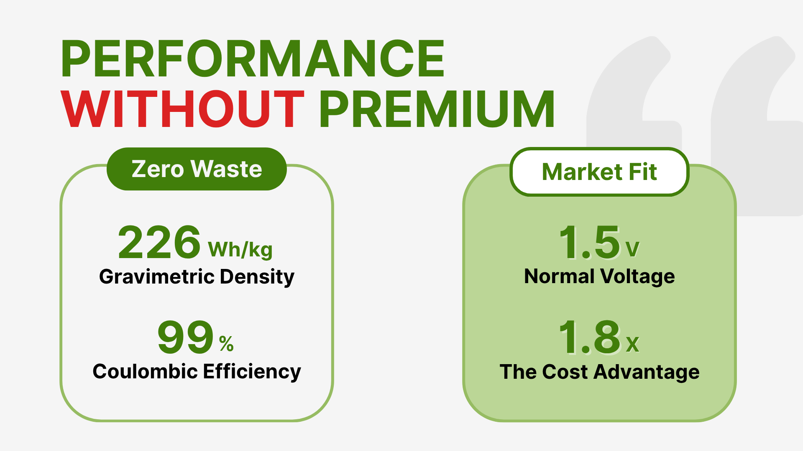
Flint紙電池 B2B商務簡報
在多項專案併行下，透過分工與時程控管完成資料蒐集與邏輯建構，並製作全英文簡報進行提案與問答應對；同時擔任模擬業務角色，將複雜技術規格轉化為視覺化內容，推動B2B市場行銷並展現商業價值與高抗壓表現。
查看簡報跨文化市場進入策略
以玉井芒果乾為案例，將其重新定位為高端水果甜點禮盒，調整包裝設計、內容物與多元定價策略，以符合日本商務送禮市場需求；同時運用AI模擬展示攤位，整合線上線下通路提案，提升展覽曝光與市場推廣效益。
查看策略提案